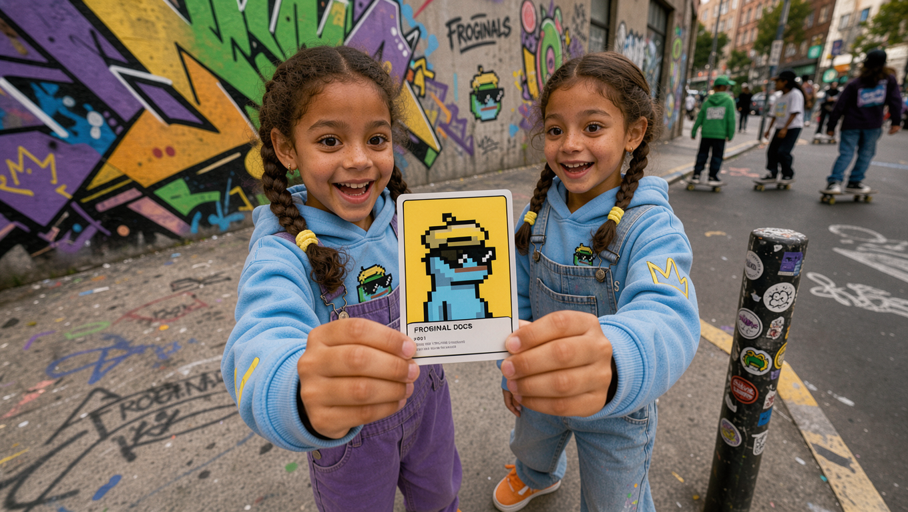

Lily was eight years old and loved collecting things. Colourful stickers, tiny toys, trading cards—if it had a character and a story, she wanted to know more. Then she heard about NFTs. They sounded exciting, but also confusing. How could someone collect something that lived on a computer?
One afternoon, while exploring the internet with her parents, Lily discovered the FROGINAL DOGS: a lively world of playful characters, digital art and a community built around creativity. She wanted to understand what made these digital collectibles different from an ordinary picture.
1. What exactly is an NFT?
Her parents started with the letters. NFT means non-fungible token. “Non-fungible” means unique or not interchangeable one-for-one with another item in exactly the same way. A dollar can generally be exchanged for another dollar. A one-of-a-kind collectible card has its own identity.
An NFT is a token recorded on a blockchain. It can be connected to a digital collectible, artwork or another item. The token's record can help people verify details such as its identity, transaction history and which blockchain address currently controls it. The image itself and the token are not necessarily the same thing.
Lily learned an important distinction: saving or copying an image does not automatically make someone the owner of a particular NFT token. The blockchain record is what helps distinguish the token from an ordinary copy of the artwork.
2. The blockchain: a shared digital record book
“Imagine a record book that many computers help maintain,” her parents explained. “When a transaction is accepted by the network, it is added to the shared history.”
That is a simple way to picture a blockchain. It is a distributed digital ledger. Computers on the network follow rules to check and record transactions. Anyone can often inspect public blockchain records using a block explorer, although the information may look technical at first.
A crypto wallet helps a person manage the keys used to access blockchain assets and approve transactions. A wallet is not literally a box holding coins or pictures. The assets are represented by records on the blockchain, while the wallet manages access.
3. Discovering Dogecoin
Next, Lily wanted to know why FROGINALS talks about Dogecoin. She learned that Dogecoin (DOGE) is a peer-to-peer cryptocurrency with its own blockchain. It began in 2013, inspired by the popular Doge internet meme, and grew into a widely recognised cryptocurrency with an active community.
Dogecoin is a cryptocurrency, while an NFT is a unique token representing a particular digital asset or collectible. They are different kinds of things, even though both can involve blockchain technology.
Explore Dogecoin from the source
Visit the official Dogecoin website to learn about the project, its technology and its community.
Visit Dogecoin.com ↗4. What are meme coins?
Lily had seen coins with funny names and cartoon mascots. Her parents explained that “meme coin” is a common label for a cryptocurrency inspired by an internet meme, joke, character or online community. Dogecoin is a famous example.
But a funny character does not make a coin safe or valuable. Crypto assets can be volatile, projects can fail, and online hype is not proof of quality. Lily learned to separate the fun of internet culture from decisions about money.
5. How do Doginals fit in?
Then came a new word: Doginals. Lily learned that Doginals are associated with the practice of creating inscriptions on the Dogecoin blockchain. Inscriptions can attach data—such as digital artwork or other content—to individual units tracked by the network's inscription system.
This is one way the Dogecoin ecosystem can be used for digital collectibles. It is useful to understand the difference between DOGE itself, the Dogecoin blockchain, an inscription and an NFT-style collectible. They are related concepts, but they are not interchangeable terms.
For Lily, the big idea was that digital art and blockchain records can connect in interesting ways. She still had plenty to learn, but the technology no longer felt like magic.
6. Watch FROGINALS Explained
Lily's parents found an introductory video so they could explore the subject together. The episode explains the Doginals concept and gives viewers another way to understand the ecosystem.
FROGINALS EXPLAINED 🐕 | What Are Doginals and How Do They Work?
Watch the episode directly on YouTube ↗
7. The most important lesson: learn safely
By the end of the afternoon, Lily could explain the basics: an NFT is a unique token, a blockchain is a shared digital record, Dogecoin is a cryptocurrency, and Doginals refer to inscriptions associated with the Dogecoin ecosystem.
She also learned that curiosity should come before hype. She never needed to buy anything to learn. Her parents reminded her that wallets, private keys and financial transactions are for adults to manage responsibly. Nobody should ever ask for a wallet recovery phrase or private key.
And that was Lily's first big discovery in the FROGINALS universe: the best adventure starts with a question.
Keep exploring the FROGINALS universe
Curiosity, creativity and community are at the heart of the FROGINALS journey. Explore the website, meet the characters and follow the latest stories from the swamp.
MORE FROGINALS STORIESVISIT FROGINALS